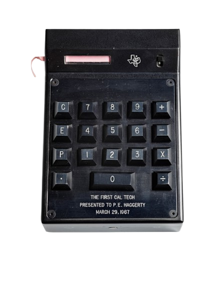

Calculadora Online
[ 0 ], [ 1 ], [ 2 ], ... [ 9 ] - Teclas numéricas estándar
[ ← ] - Borrar el último carácter
[ + ] - Adición, [ - ] - Sustracción, [ х ] - Multiplicación, [ / ] - División
[ . ] - Indicar la cantidad en decimales
[ C ] - Reinicializar la calculadora
El antecesor de la calculadora moderna fue abaco (del latín "abaco" significa "tabla").
la aparición de las calculadoras electrónicas modernas comenzó en el siglo XVII con inventos como la máquina de calcular mecánica de Blaise Pascal
y la máquina diferencial de Charles Babbage en el siglo XIX.
El verdadero avance llegó en la década de 1960 con la invención de la calculadora electrónica de bolsillo,
siendo la calculadora "Cal Tech" la primera en 1967. A partir de entonces, las calculadoras se hicieron cada vez más pequeñas, económicas y potentes,
con empresas como Texas Instruments y Hewlett-Packard compitiendo en el mercado.

Calculadora Cal Tech 1967